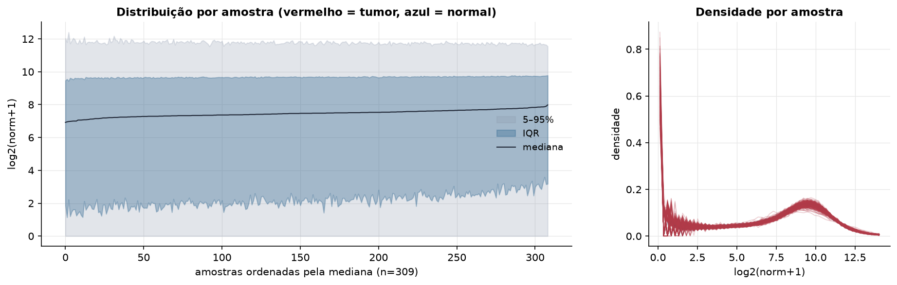
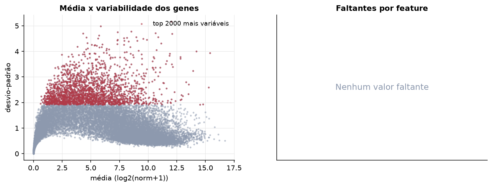
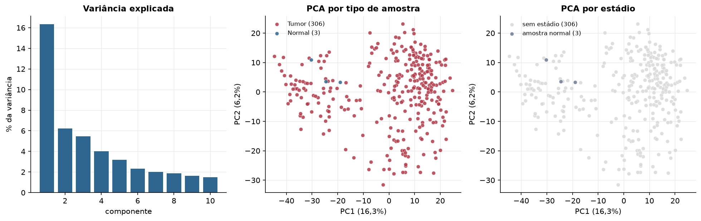
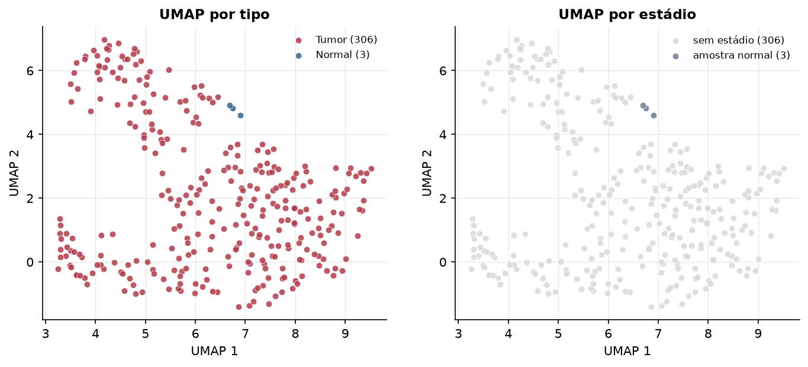
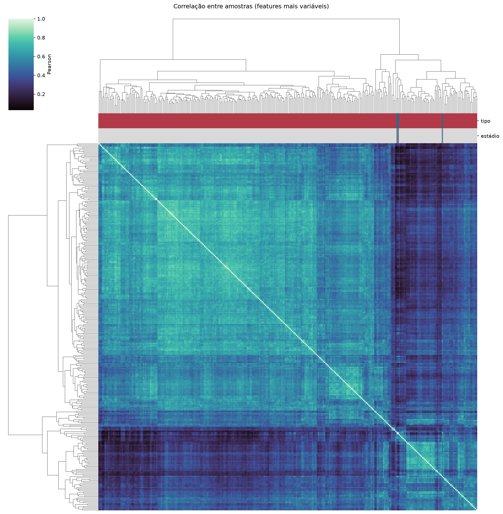
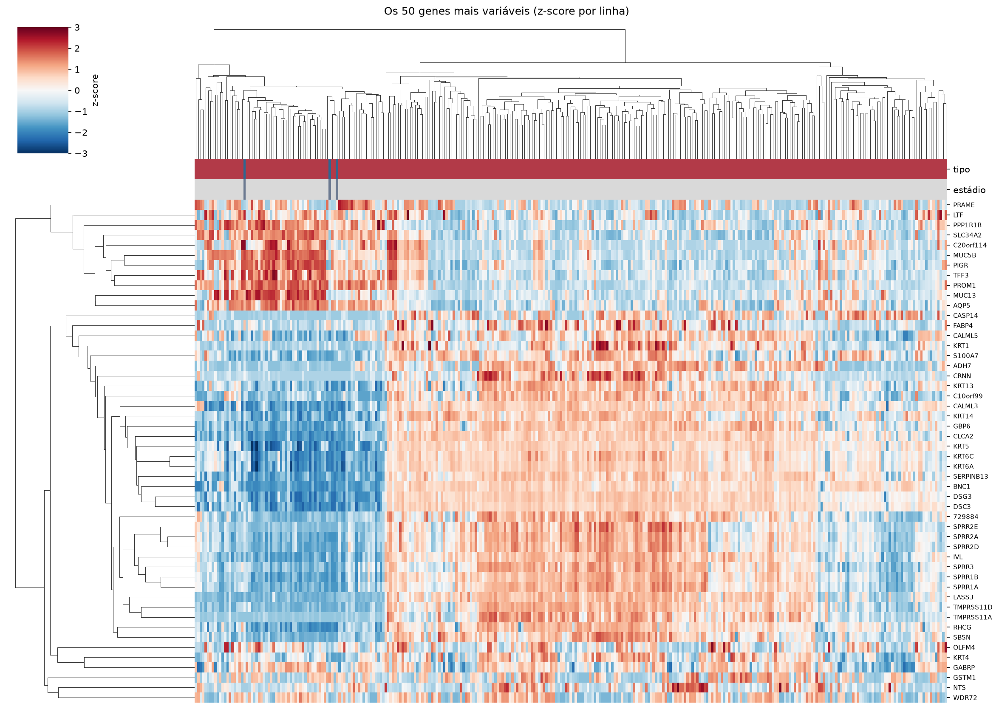
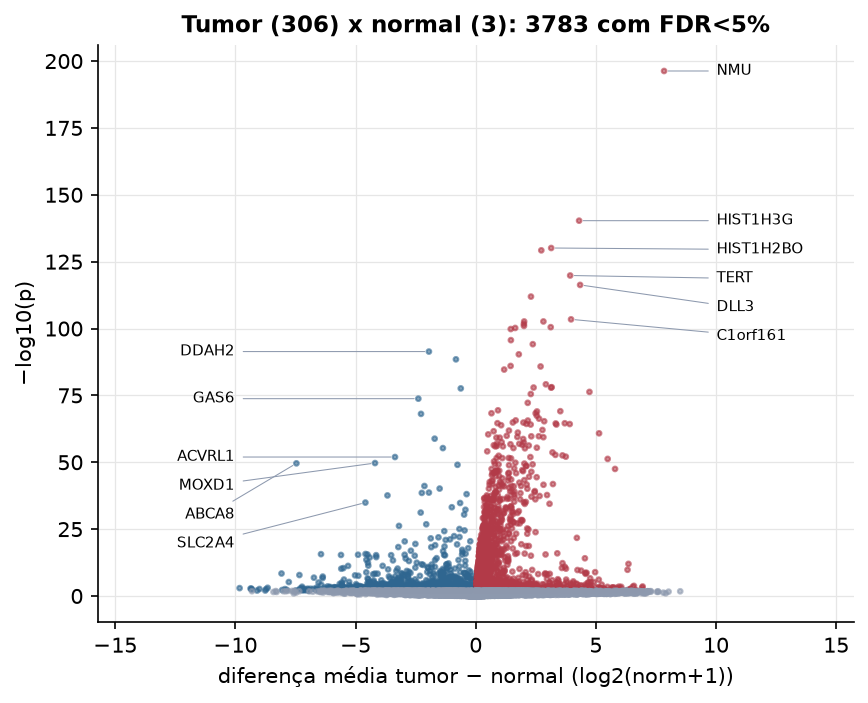
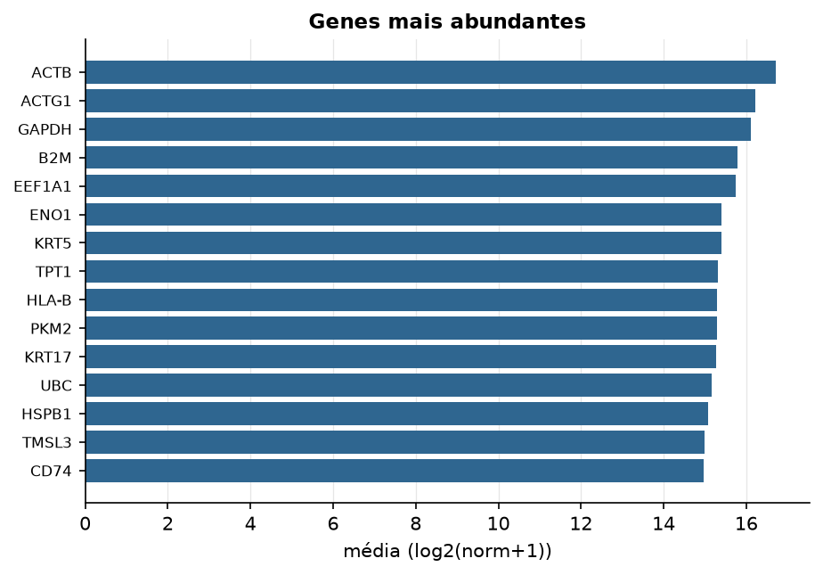

CESC · RNA-seq (PanCanAtlas)
Illumina HiSeq, RSEM normalizado e corrigido por lote (EB++), log2(x+1) · gerado em 21/10/2026 19:51
20.531genes
306amostras tumorais
3amostras normais
0,0%valores faltantes
Fonte: PanCanAtlas EB++ via API do Xena
Estes valores já vêm normalizados e com correção de lote entre plataformas e centros. Servem bem para modelos gaussianos ou redes neurais; para um modelo de contagem use as contagens brutas do GDC.
Principais resultados
- 20.531 genes medidos em 309 amostras (306 tumorais e 3 normais); 0,0% dos valores estão faltando.
- Os dois primeiros componentes principais explicam 16,3% e 6,2% da variância das features mais variáveis.
- Correlação mediana entre amostras: 0,53.
- Tumor x normal: 3783 genes diferentes com FDR < 5% (2439 maiores no tumor, 1344 maiores no normal; 3 pacientes têm o par tumor-normal).
- Mais aumentados no tumor: NMU, HIST1H3G, HIST1H2BO, C9orf53, TERT, DLL3, HIST1H3B, C1orf161.
- Mais reduzidos no tumor: DDAH2, C6orf89, NDFIP1, GAS6, GRK5, TRPC6, FAM13A, ACVRL1.
- Associações clínicas com p < 0,05 nos componentes principais: PC2 com idade (p=0.028); PC2 com sobrevida (p=0.0042).
- Em mediana, 80,1% dos genes têm expressão acima de log2(norm+1)=1 em cada amostra.
Distribuição dos valores


Estrutura das amostras




Tumor x normal

Features mais diferentes entre tumor e normal
| diferenca_tumor_menos_normal | t | p | fdr | |
|---|---|---|---|---|
| NMU | 7.838 | 74.067 | 5.11e-197 | 1.03e-192 |
| HIST1H3G | 4.302 | 46.724 | 4.71e-141 | 4.74e-137 |
| HIST1H2BO | 3.141 | 42.751 | 7.75e-131 | 5.2e-127 |
| C9orf53 | 2.728 | 42.423 | 5.8e-130 | 2.92e-126 |
| TERT | 3.929 | 39.003 | 1.47e-120 | 5.93e-117 |
| DLL3 | 4.344 | 37.77 | 4.97e-117 | 1.67e-113 |
| HIST1H3B | 2.298 | 36.282 | 1.13e-112 | 3.26e-109 |
| C1orf161 | 3.966 | 33.482 | 3.66e-104 | 9.2e-101 |
| OR2B6 | 2.816 | 33.228 | 2.26e-103 | 4.56e-100 |
| HIST1H2AL | 2.015 | 33.228 | 2.27e-103 | 4.56e-100 |
| HIST1H2BF | 2.004 | 32.933 | 1.9e-102 | 3.48e-99 |
| HIST1H2AJ | 2.007 | 32.694 | 1.07e-101 | 1.8e-98 |
| KPNA7 | 3.12 | 32.549 | 3.08e-101 | 4.77e-98 |
| PRINS | 1.642 | 32.455 | 6.13e-101 | 8.81e-98 |
| HIST1H4D | 1.458 | 32.327 | 1.56e-100 | 2.09e-97 |
| DTYMK | 1.464 | 33.548 | 2.19e-96 | 2.76e-93 |
| CCR8 | 2.375 | 30.571 | 7.08e-95 | 8.39e-92 |
| DDAH2 | -1.948 | -31.623 | 4.09e-92 | 4.57e-89 |
| DLEU7 | 1.793 | 29.423 | 4.39e-91 | 4.65e-88 |
| C6orf89 | -0.824 | -33.295 | 3.3e-89 | 3.32e-86 |
| HIST1H3J | 1.451 | 28.132 | 9.75e-87 | 9.34e-84 |
| TMEM105 | 2.698 | 28.076 | 1.51e-86 | 1.38e-83 |
| MIP | 1.183 | 27.738 | 2.17e-85 | 1.9e-82 |
| FKBP6 | 2.918 | 26.146 | 7.16e-80 | 6e-77 |
| C11orf85 | 3.16 | 25.84 | 8.52e-79 | 6.86e-76 |
| KRTAP4-1 | 2.408 | 25.803 | 1.15e-78 | 8.91e-76 |
| LGALS9B | 3.134 | 25.794 | 1.23e-78 | 9.18e-76 |
| NDFIP1 | -0.622 | -25.873 | 2.42e-78 | 1.74e-75 |
| PGLYRP3 | 4.732 | 25.341 | 4.94e-77 | 3.43e-74 |
| KRT74 | 2.291 | 25.119 | 3.04e-76 | 2.04e-73 |
Associação com variáveis clínicas
p-valores da associação dos três primeiros componentes principais (só tumores) com estádio (Kruskal-Wallis), sexo (Mann-Whitney), idade (Spearman) e sobrevida global (Cox univariado).
| estádio (Kruskal) | sexo (Mann-Whitney) | idade (Spearman) | sobrevida OS (Cox) | |
|---|---|---|---|---|
| PC1 (16,3%) | 0.81 | 0.886 | ||
| PC2 (6,4%) | 0.028 | 0.004 | ||
| PC3 (5,1%) | 0.054 | 0.126 |
Mais abundantes
